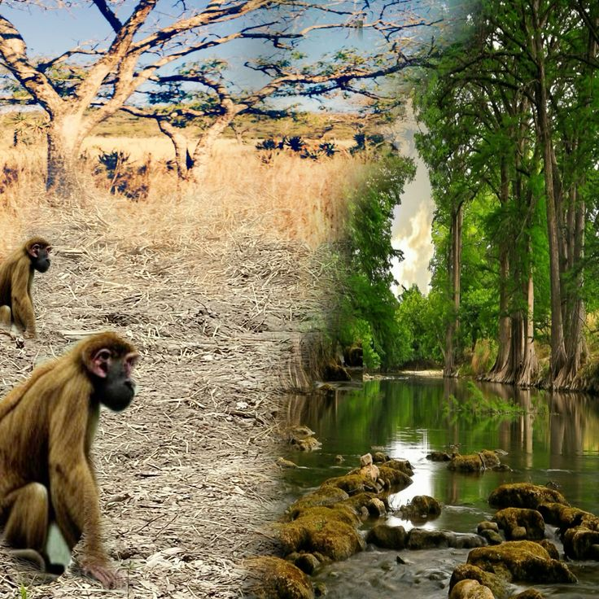
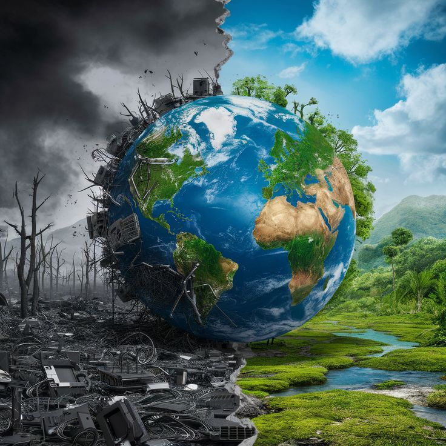
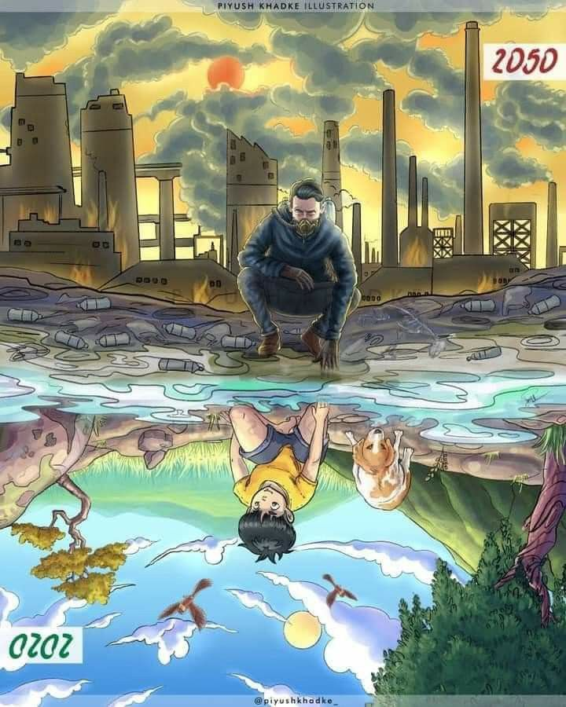

  
🌍 Perubahan iklim dan pemanasan global merupakan dua isu lingkungan yang saling berkaitan dan berdampak besar terhadap kehidupan di bumi. Pemanasan global terjadi akibat peningkatan gas rumah kaca seperti karbon dioksida (CO₂) dan metana (CH₄) di atmosfer, yang menyebabkan suhu bumi naik secara signifikan. Emisi gas ini sebagian besar berasal dari aktivitas manusia, seperti pembakaran bahan bakar fosil, deforestasi, dan industri. Akibatnya, es di kutub mencair, permukaan air laut meningkat, serta cuaca menjadi semakin ekstrem dengan frekuensi badai, gelombang panas, dan kekeringan yang lebih tinggi.🔥☀️
🌡️ Perubahan iklim, yang merupakan dampak dari pemanasan global, menyebabkan ketidakseimbangan dalam ekosistem dan mengancam kehidupan banyak spesies, termasuk manusia. Pergeseran pola hujan dapat menyebabkan gagal panen dan krisis pangan di berbagai wilayah. Selain itu, suhu yang semakin tinggi meningkatkan risiko penyakit tropis dan mengurangi ketersediaan air bersih. Untuk mengatasi permasalahan ini, diperlukan langkah-langkah seperti mengurangi emisi karbon, meningkatkan penggunaan energi terbarukan, serta menjaga kelestarian hutan dan ekosistem alami. Upaya bersama dari individu, pemerintah 🏛️, dan industri sangat penting untuk memperlambat laju perubahan iklim dan menjaga bumi tetap layak huni bagi generasi mendatang. 🌱🌍